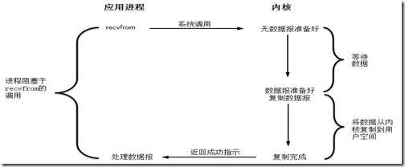
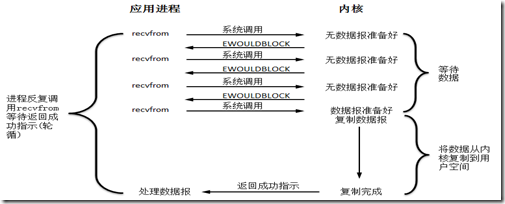
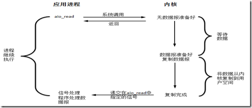
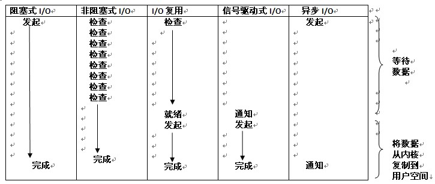

各种IO模型
Linux与I/O的东西 《UNIX网络编程》卷一中提到了五种I/O模型。(fd 文件描述符)
-
阻塞式I/OJava的BIO就是这种模式。

-
非阻塞式I/O制定系统调用read/write的参数为非阻塞，在内核fd未就绪时，不阻塞进程，而是返回一个错误码，应用程序轮询，直至fd就绪。

-
I/O复用linux提供select/poll，进程通过将一个或多个fd传递给select或poll系统调用，阻塞在select；这样select/poll可以帮我们侦测到许多fd是否就绪；但select/poll是顺序扫描fd是否就绪，而且支持的fd数量有限。linux还提供了一个epoll系统调用，epoll是基于事件驱动方式，而不是顺序扫描，当有fd就绪时，立即回调函数rollback。

-
信号驱动式I/O -
异步I/O告知内核某个操作，并让内核在整个操作完成后通知我们。 

I/O操作分成两个步骤：发起I/O请求、实际的I/O操作。
同步I/O和异步I/O的区别在于第二个步骤(实际的I/O操作)是否阻塞，如果实际的I/O读写阻塞请求进程，那么就是同步I/O；如果不阻塞，而是操作系统帮你完成I/O操作在将结果返回给你，那就是异步I/O。
阻塞I/O、非阻塞I/O、I/O复用、信号驱动I/O 都是同步I/O。
阻塞I/O和非阻塞I/O的却别在于第一个步骤(发起I/O请求)是否阻塞。
BIO
socket
多线程socket服务端代码：
public class SocketTestServer2 {
public static void main(String[] args) {
try {
ServerSocket server = new ServerSocket(9999);
while (true) {
Socket client = server.accept();
//可以看到没来一个请求就会启动一个线程进行处理
Thread thread = new Thread(new Server2(client));
thread.start();
}
} catch (IOException e) {
// TODO Auto-generated catch block
e.printStackTrace();
}
}
}
class Server2 implements Runnable {
private Socket client;
public Server2(Socket client) {
this.client = client;
}
@Override
public void run() {
try {
BufferedReader in = new BufferedReader(new InputStreamReader(
client.getInputStream()));
BufferedWriter out = new BufferedWriter(new OutputStreamWriter(
client.getOutputStream()));
while (true) {
out.write("test");
out.newLine();
out.flush();
String ret = in.readLine();
System.out.println("客户端发过来的内容: " + ret);
}
} catch (IOException e) {
e.printStackTrace();
} finally {
}
}
}
客户端代码：
public class SocketTestClient2 {
public static void main(String[] args) {
try {
Socket client = new Socket("127.0.0.1", 9999);
BufferedReader in = new BufferedReader(new InputStreamReader(
client.getInputStream()));
BufferedWriter out = new BufferedWriter(new OutputStreamWriter(
client.getOutputStream()));
while (true) {
String ret = in.readLine();
System.out.println("服务器端返回过来的是: " + ret);
out.write("afdafafda");
out.newLine(); // HERE!!!!!!
out.flush();
}
} catch (IOException e) {
// TODO Auto-generated catch block
e.printStackTrace();
}
}
}
NIO
虽然Java NIO 有很多类和组件，但是 Channel、Buffer、Selector构成了其核心的API。
Channel、Buffer

public class NioTest2 {
public static void main(String[] args) throws URISyntaxException, IOException {
URL inURL = NioTest2.class.getResource("/log4j.properties");
File inFile = new File(inURL.toURI());
FileInputStream inStream = new FileInputStream(inFile);
FileChannel inChannel = inStream.getChannel();
File outFile = new File("D://test.txt");
FileOutputStream outStream = new FileOutputStream(outFile);
FileChannel outChannel = outStream.getChannel();
ByteBuffer buffer = ByteBuffer.allocate(48);
while(inChannel.read(buffer) != -1){
buffer.flip();
outChannel.write(buffer);
buffer.clear();
}
outChannel.close();
outStream.close();
inChannel.close();
inStream.close();
}
}
Selector

Socket
服务端：
public class SocketTestServer {
public static void main(String[] args) throws IOException {
SocketServer ss = new SocketServer();
ss.start();
}
}
class SocketServer {
public void start() throws IOException {
ServerSocketChannel server = ServerSocketChannel.open();
SocketAddress sAddress = new InetSocketAddress(9999);
server.socket().bind(sAddress);
server.configureBlocking(false);
Selector selector = Selector.open();
SelectionKey serverKey = server.register(selector,
SelectionKey.OP_ACCEPT);
while (true) {
int readyCount = selector.select();
if (readyCount == 0)
continue;
Iterator ite = selector.selectedKeys().iterator();
while (ite.hasNext()) {
SelectionKey key = (SelectionKey) ite.next();
ite.remove();
if (key == serverKey) {
if (key.isAcceptable()) {
System.out.println("服务端接收到连接");
SocketChannel client = server.accept();
client.configureBlocking(false);
client.write(ByteBuffer.wrap("server accpet".getBytes()));
client.register(selector, SelectionKey.OP_READ);
}
} else {
SocketChannel client = (SocketChannel) key.channel();
if (key.isConnectable()) {
} else if (key.isReadable()) {
System.out.println("服务端可以读取数据了");
ByteBuffer buffer = ByteBuffer.allocate(40);
//坑人的返回值
while (client.read(buffer) >0) {
buffer.flip();
while (buffer.hasRemaining()) {
System.out.print((char) buffer.get());
}
buffer.clear();
}
client.write(ByteBuffer.wrap("server recivice message!".getBytes()));
} else if (key.isWritable()) {
}
}
}
}
}
}
客户端：
public class SocketTestClient {
public static void main(String[] args) throws IOException {
SocketClient ss = new SocketClient();
ss.init();
}
}
class SocketClient {
public void init() throws IOException {
SocketChannel client = SocketChannel.open();
client.configureBlocking(false);
client.connect(new InetSocketAddress("127.0.0.1", 9999));
Selector selector = Selector.open();
client.register(selector, SelectionKey.OP_CONNECT);
while(true){
int readyCount = selector.select();
if(readyCount==0)continue;
Iterator ite = selector.selectedKeys().iterator();
while (ite.hasNext()) {
SelectionKey key = (SelectionKey) ite.next();
ite.remove();
SocketChannel channel = (SocketChannel) key.channel();
if(key.isAcceptable()){
}else if(key.isConnectable()){
System.out.println("客户端建立了连接");
if(channel.isConnectionPending()){
channel.finishConnect();
}
channel.configureBlocking(false);
channel.write(ByteBuffer.wrap("client connect".getBytes()));
channel.register(selector, SelectionKey.OP_READ);
}else if(key.isReadable()){
System.out.println("客户端可以读取数据了");
ByteBuffer buffer = ByteBuffer.allocate(40);
while(channel.read(buffer)>0){
buffer.flip();
while(buffer.hasRemaining()){
System.out.print((char)buffer.get());
}
buffer.clear();
}
channel.write(ByteBuffer.wrap("the second message from client".getBytes()));
}else if(key.isWritable()){
}
}
}
}
}
多线程处理的服务端：
AIO
public class AsyFileTest {
public static void main(String[] args) {
try {
Path filePath = Paths.get("D://test.txt");
final AsynchronousFileChannel channel = AsynchronousFileChannel
.open(filePath);
ByteBuffer buffer = ByteBuffer.allocate(48);
channel.read(buffer, 0, buffer, new FileReadHandler(0, channel));
Thread.sleep(Integer.MAX_VALUE);
} catch (IOException | InterruptedException e) {
e.printStackTrace();
}
}
}
class FileReadHandler implements CompletionHandler<Integer,ByteBuffer>{
private int position;
private AsynchronousFileChannel channel;
public FileReadHandler(int position,AsynchronousFileChannel channel) {
this.position = position;
this.channel = channel;
}
@Override
public void completed(Integer result, ByteBuffer buffer) {
if(result>0){
position = position + result;
buffer.flip();
while(buffer.hasRemaining()){
System.out.print((char)buffer.get());
}
buffer.compact();
System.out.println("");
channel.read(buffer, position, buffer, this);
}else{
try {
channel.close();
} catch (IOException e) {
e.printStackTrace();
}
}
}
@Override
public void failed(Throwable exc, ByteBuffer buffer) {
}
}
Socket
先来个例子把，鉴于网上没啥靠谱的例子，这个还是我从jdk的示例代码基础上改的：
Server：
public class AsyServerSocketTest2 {
public static void main(String[] args) {
try {
ExecutorService threadPool = Executors.newFixedThreadPool(2);
AsynchronousChannelGroup cGroup = AsynchronousChannelGroup
.withThreadPool(threadPool);
AsynchronousServerSocketChannel server = AsynchronousServerSocketChannel
.open(cGroup);
server.bind(new InetSocketAddress(9999));
server.accept(
server,
new CompletionHandler<AsynchronousSocketChannel, AsynchronousServerSocketChannel>() {
@Override
public void completed(
AsynchronousSocketChannel clientChannel,
AsynchronousServerSocketChannel serverChannel) {
try {
System.out.println("有客户端连上了！"
+ clientChannel.getRemoteAddress()
.toString());
} catch (IOException e) {
e.printStackTrace();
}
serverChannel.accept(serverChannel, this);
SocketWrapper clientWrap = new SocketWrapper(
clientChannel);
clientWrap.write("收到你的请求了");
clientWrap.read();
}
@Override
public void failed(Throwable exc,
AsynchronousServerSocketChannel attachment) {
exc.printStackTrace();
}
});
Thread.sleep(Integer.MAX_VALUE);
} catch (IOException | InterruptedException e) {
e.printStackTrace();
}
}
}
SocketWrapper：
public class SocketWrapper {
private AsynchronousSocketChannel clientChannel;
private Queue<ByteBuffer> messPool = new LinkedList<ByteBuffer>();
private boolean isWrite = false;
public SocketWrapper(AsynchronousSocketChannel clientChannel) {
this.clientChannel = clientChannel;
try {
this.clientChannel.setOption(StandardSocketOptions.TCP_NODELAY, true);
} catch (IOException e) {
e.printStackTrace();
}
}
public void read() {
ByteBuffer buffer = ByteBuffer.allocate(48);
clientChannel.read(buffer, buffer, new ReadHandler());
}
public void write(String mess){
boolean shouldWrite = false;
synchronized(messPool){
System.out.println("写队列消息个数为："+messPool.size());
messPool.add(ByteBuffer.wrap(mess.getBytes()));
if(!isWrite){
isWrite = true;
shouldWrite = true;
}
}
if(shouldWrite){
writeFromPool();
}
}
private void writeFromPool(){
ByteBuffer buffer = null;
synchronized(messPool){
System.out.println("写队列消息个数为："+messPool.size());
buffer = messPool.poll();
if(buffer==null){
isWrite = false;
}
}
if(isWrite){
write(buffer);
}
}
private void write(ByteBuffer buffer){
System.out.println("写数据啦！");
clientChannel.write(buffer, buffer, new WriteHandler());
}
public void close() {
try {
clientChannel.close();
} catch (IOException e) {
e.printStackTrace();
}
}
class ReadHandler implements CompletionHandler<Integer, ByteBuffer> {
@Override
public void completed(Integer result, ByteBuffer buffer) {
if (result > 0) {
buffer.flip();
while (buffer.hasRemaining()) {
System.out.print((char) buffer.get());
}
System.out.println("");
buffer.compact();
//继续监听读事件
clientChannel.read(buffer, buffer, this);
write("123123");
} else {
System.out.println("连接已经断开");
close();
}
}
@Override
public void failed(Throwable exc, ByteBuffer buffer) {
close();
System.out.println("读出问题啦！");
exc.printStackTrace();
}
}
class WriteHandler implements CompletionHandler<Integer, ByteBuffer>{
@Override
public void completed(Integer result, ByteBuffer buffer) {
if(buffer.hasRemaining()){
clientChannel.write(buffer, buffer, this);
}else{
writeFromPool();
}
}
@Override
public void failed(Throwable exc, ByteBuffer attachment) {
close();
System.out.println("写出问题啦！");
exc.printStackTrace();
}
}
}
Client：
public class AsyClientSocketTest2 {
public static void main(String[] args) {
ExecutorService threadPool = Executors.newFixedThreadPool(3);
try {
AsynchronousChannelGroup group = AsynchronousChannelGroup.withThreadPool(threadPool);
AsynchronousSocketChannel sClient = AsynchronousSocketChannel.open(group);
sClient.connect(new InetSocketAddress("127.0.0.1",9999), sClient, new CompletionHandler<Void, AsynchronousSocketChannel>() {
@Override
public void completed(Void result,
AsynchronousSocketChannel client) {
SocketWrapper clientWrap = new SocketWrapper(client);
clientWrap.write("我要发消息了");
clientWrap.read();
}
@Override
public void failed(Throwable exc,
AsynchronousSocketChannel client) {
exc.printStackTrace();
}
});
Thread.sleep(Integer.MAX_VALUE);
} catch (IOException e) {
// TODO Auto-generated catch block
e.printStackTrace();
} catch (InterruptedException e) {
// TODO Auto-generated catch block
e.printStackTrace();
}
}
}
Netty作为Java界最著名的IO库，它一直使用的NIO，原因请看https://github.com/netty/netty/issues/2515
日期：2013-07-24、2013-8-5
参考资料：深入浅出异步I/O模型、理解Java NIO、基于事件的 NIO 多线程服务器、Java aio和JSR 203、Java aio(异步网络IO)初探、Tricks and Tips With AIO、NIO and NIO.2 Examples、java 之异步套接字编程实例（AIO)、Java NIO类库Selector机制解析（上）